lorenz_partial_additive_mse_uniform_p30_obsnoise001__ndelays_initsteps_autodimProject: Lorenz_INDpartial_NDInitSweep_autodim_D1_NormTrue__JacobianODE
Launched: 2026-04-20T19:55:11Z
Completed: 2026-04-21T04:00:20Z
Outcome: complete_clean
Git: latent-JacobianODE @ 6f807fc
Expected runs: 40
lorenz_partial_additive_mse_uniform_p30_obsnoise001__ndelays_initsteps_autodimDescription
Lorenz partial additive coupling, uniform reconstruction loss, obs_noise=0.01, prediction_steps=30, loop_closure_weight=0. Sweeps delay_embedding_params.n_delays over [5, 10, 15, ..., 100] (step 5, 20 values) × jacobianODEint_kwargs.traj_init_steps over [15, 30] = 40 runs. n_target_dims is picked at data-load time as the smallest k such that the first k PCs of the noisy training delay embeddings explain ≥ model.n_target_var_threshold of the total variance. final_perm_identity=true on the encoder guarantees that at init z[..., :n_target_dims] == x[..., :n_target_dims] — the first n_target_dims most-recent observations flow into z_dyn without depending on permutation_seed.
Hypothesis
At a given obs_noise level, both n_delays and traj_init_steps change how much state information is accumulated before the dynamics model is asked to predict. The PCA-auto dim lets each n_delays pick its own latent dimensionality, so that comparing across n_delays is a fair comparison of "how much useful rank is present" rather than "how well 3 fixed dims capture different embeddings." With routing fixed, no n_delays will fail the decoded[0]-disconnected-from-z_dyn failure mode we saw at seed=42 n_delays=30. We expect: (i) at higher traj_init_steps, every n_delays achieves a better val_loss since the encoder has more history to work with; (ii) a soft optimum in n_delays tracking the point where PCA-auto n_target_dims stops growing.
Success criteria
Swept axes (9): data.train_test_params.delay_embedding_params.n_delays, data.train_test_params.seq_length, model.encoder.n_input, model.n_target_dims, model.n_target_dims_pca_auto, model.n_target_dims_pca_cum_var, model.params.input_dim, model.params.output_dim, training.lightning.jacobianODEint_kwargs.traj_init_steps
Chosen run (by best_traj_loss): mwd5kgho — traj_loss=0.00063, MASE=0.6510, R²=0.9983, LC loss=0.479, epoch=165.0
Swept-axis values at chosen run: data.train_test_params.delay_embedding_params.n_delays=40 · data.train_test_params.seq_length=60 · model.encoder.n_input=40 · model.n_target_dims=4 · model.n_target_dims_pca_auto=4 · model.n_target_dims_pca_cum_var=0.995447 · model.params.input_dim=4 · model.params.output_dim=16 · training.lightning.jacobianODEint_kwargs.traj_init_steps=30
Runs analyzed: 40 (expected 40)
| run_idx | run_id | data.train_test_params.delay_embedding_params.n_delays |
data.train_test_params.seq_length |
model.encoder.n_input |
model.n_target_dims |
model.n_target_dims_pca_auto |
model.n_target_dims_pca_cum_var |
model.params.input_dim |
model.params.output_dim |
training.lightning.jacobianODEint_kwargs.traj_init_steps |
best_traj_loss | best_MASE | R² | LC loss | epoch |
|---|---|---|---|---|---|---|---|---|---|---|---|---|---|---|---|
| 15 | mwd5kgho |
40 | 60 | 40 | 4 | 4 | 0.995447 | 4 | 16 | 30 | 0.00063 | 0.6510 | 0.9983 | 0.479 | 165.0 |
| 22 | 2mukzabp |
60 | 45 | 60 | 5 | 5 | 0.993171 | 5 | 25 | 15 | 0.00090 | 0.7218 | 0.9976 | 3.934 | 100.0 |
| 7 | 9ku1zcbn |
20 | 60 | 20 | 3 | 3 | 0.998615 | 3 | 9 | 30 | 0.00115 | 0.7377 | 0.9969 | 0.159 | 100.0 |
| 27 | 2wrj3chp |
70 | 60 | 70 | 6 | 6 | 0.994529 | 6 | 36 | 30 | 0.00116 | 0.8191 | 0.9969 | 2.158 | 115.0 |
| 20 | d0dd2rwn |
55 | 45 | 55 | 5 | 5 | 0.994855 | 5 | 25 | 15 | 0.00117 | 0.7347 | 0.9969 | 0.906 | 115.0 |
| 37 | qanhc2n6 |
95 | 60 | 95 | 7 | 7 | 0.992462 | 7 | 49 | 30 | 0.00122 | 0.8130 | 0.9967 | 4.509 | 114.0 |
| 21 | ujup82ac |
55 | 60 | 55 | 5 | 5 | 0.994855 | 5 | 25 | 30 | 0.00128 | 0.7850 | 0.9966 | 0.768 | 89.0 |
| 26 | naxyvm25 |
70 | 45 | 70 | 6 | 6 | 0.994529 | 6 | 36 | 15 | 0.00133 | 0.8662 | 0.9965 | 2.609 | 115.0 |
| 19 | tbc0sn6k |
50 | 60 | 50 | 4 | 4 | 0.990769 | 4 | 16 | 30 | 0.00137 | 0.8659 | 0.9964 | 0.545 | 123.0 |
| 9 | uh2gim40 |
25 | 60 | 25 | 3 | 3 | 0.997001 | 3 | 9 | 30 | 0.00143 | 0.7691 | 0.9961 | 0.307 | 103.0 |
| 36 | s6py0jgm |
95 | 45 | 95 | 7 | 7 | 0.992462 | 7 | 49 | 15 | 0.00144 | 0.8495 | 0.9961 | 8.124 | 117.0 |
| 17 | 19bk9bgk |
45 | 60 | 45 | 4 | 4 | 0.993267 | 4 | 16 | 30 | 0.00144 | 0.8824 | 0.9961 | 0.501 | 117.0 |
| 18 | fesvj9gx |
50 | 45 | 50 | 4 | 4 | 0.990769 | 4 | 16 | 15 | 0.00145 | 0.8473 | 0.9961 | 0.833 | 115.0 |
| 8 | 8hntsv8t |
25 | 45 | 25 | 3 | 3 | 0.997001 | 3 | 9 | 15 | 0.00147 | 0.7837 | 0.9961 | 0.415 | 125.0 |
| 16 | 3bhm9cwb |
45 | 45 | 45 | 4 | 4 | 0.993267 | 4 | 16 | 15 | 0.00154 | 0.9538 | 0.9957 | 0.644 | 93.0 |
| 14 | lmfnwfju |
40 | 45 | 40 | 4 | 4 | 0.995447 | 4 | 16 | 15 | 0.00155 | 0.8199 | 0.9958 | 0.777 | 51.0 |
| 32 | ub83b692 |
85 | 45 | 85 | 6 | 6 | 0.990619 | 6 | 36 | 15 | 0.00156 | 0.9354 | 0.9959 | 4.314 | 108.0 |
| 25 | ctm835as |
65 | 60 | 65 | 5 | 5 | 0.991353 | 5 | 25 | 30 | 0.00156 | 0.8399 | 0.9958 | 0.851 | 101.0 |
| 6 | 7yi2s4lj |
20 | 45 | 20 | 3 | 3 | 0.998615 | 3 | 9 | 15 | 0.00161 | 0.7683 | 0.9956 | 0.132 | 179.0 |
| 31 | ww7xn01z |
80 | 60 | 80 | 6 | 6 | 0.991932 | 6 | 36 | 30 | 0.00163 | 0.8997 | 0.9956 | 1.279 | 106.0 |
| 24 | 9s2b04k4 |
65 | 45 | 65 | 5 | 5 | 0.991353 | 5 | 25 | 15 | 0.00174 | 0.8635 | 0.9954 | 1.822 | 118.0 |
| 33 | u7z0l6t9 |
85 | 60 | 85 | 6 | 6 | 0.990619 | 6 | 36 | 30 | 0.00175 | 0.9634 | 0.9953 | 1.994 | 108.0 |
| 10 | cteqr957 |
30 | 45 | 30 | 3 | 3 | 0.994315 | 3 | 9 | 15 | 0.00182 | 0.8434 | 0.9951 | 0.903 | 162.0 |
| 13 | bcmi4sfg |
35 | 60 | 35 | 3 | 3 | 0.990505 | 3 | 9 | 30 | 0.00196 | 1.0474 | 0.9948 | 0.847 | 121.0 |
| 30 | xfx1bpzk |
80 | 45 | 80 | 6 | 6 | 0.991932 | 6 | 36 | 15 | 0.00216 | 0.9811 | 0.9942 | 2.520 | 69.0 |
| 35 | da4mcx9g |
90 | 60 | 90 | 7 | 7 | 0.993494 | 7 | 49 | 30 | 0.00219 | 0.9754 | 0.9942 | 3.584 | 114.0 |
| 28 | unoug06z |
75 | 45 | 75 | 6 | 6 | 0.993244 | 6 | 36 | 15 | 0.00219 | 1.0552 | 0.9941 | 2.746 | 155.0 |
| 12 | ifm65vdy |
35 | 45 | 35 | 3 | 3 | 0.990505 | 3 | 9 | 15 | 0.00221 | 1.1297 | 0.9942 | 1.293 | 103.0 |
| 39 | ls3lu1o8 |
100 | 60 | 100 | 7 | 7 | 0.991454 | 7 | 49 | 30 | 0.00231 | 0.9989 | 0.9938 | 1.907 | 95.0 |
| 38 | t61g53wz |
100 | 45 | 100 | 7 | 7 | 0.991454 | 7 | 49 | 15 | 0.00245 | 1.0361 | 0.9934 | 3.260 | 81.0 |
| 5 | xr9flz8e |
15 | 60 | 15 | 2 | 2 | 0.995018 | 2 | 4 | 30 | 0.00250 | 0.9717 | 0.9933 | 0.200 | 90.0 |
| 34 | gu634bsb |
90 | 45 | 90 | 7 | 7 | 0.993494 | 7 | 49 | 15 | 0.00288 | 1.1246 | 0.9922 | 4.210 | 94.0 |
| 23 | f7mxpwk4 |
60 | 60 | 60 | 5 | 5 | 0.993171 | 5 | 25 | 30 | 0.00291 | 1.1178 | 0.9921 | 4.230 | 46.0 |
| 29 | 1zx69knt |
75 | 60 | 75 | 6 | 6 | 0.993244 | 6 | 36 | 30 | 0.00296 | 1.2479 | 0.9921 | 1.429 | 108.0 |
| 4 | vblk9kz9 |
15 | 45 | 15 | 2 | 2 | 0.995018 | 2 | 4 | 15 | 0.00361 | 0.9913 | 0.9906 | 0.511 | 176.0 |
| 11 | 28anfd5u |
30 | 60 | 30 | 3 | 3 | 0.994315 | 3 | 9 | 30 | 0.00435 | 1.2723 | 0.9877 | 0.150 | 35.0 |
| 2 | fhrst1rb |
10 | 45 | 10 | 2 | 2 | 0.998549 | 2 | 4 | 15 | 0.00542 | 1.2260 | 0.9854 | 0.105 | 151.0 |
| 0 | vum47n54 |
5 | 45 | 5 | 1 | 1 | 0.993092 | 1 | 1 | 15 | 0.07173 | 6.8762 | 0.8097 | 0.000 | 126.0 |
| 1 | 9u7h6zjy |
5 | 60 | 5 | 1 | 1 | 0.993092 | 1 | 1 | 30 | 0.07484 | 6.9776 | 0.7998 | 0.000 | 83.0 |
| 3 | f93huri8 |
10 | 60 | 10 | 2 | 2 | 0.998549 | 2 | 4 | 30 | nan | nan | nan | 0.010 | — |
| Criterion | Verdict | Note |
|---|---|---|
| All 40 runs train without divergence (routing fix holds) | Unknown | |
| PCA-chosen n_target_dims grows with n_delays then saturates | Unknown | |
| Val traj_loss improves with traj_init_steps=30 over traj_init_steps=15 at most n_delays | Unknown | |
| Best val traj_loss per (noise, init) has a non-monotonic optimum in n_delays | Unknown |
Automated verdicts use simple numeric-threshold parsing and may mis-classify qualitative criteria. The Discussion section below takes precedence.
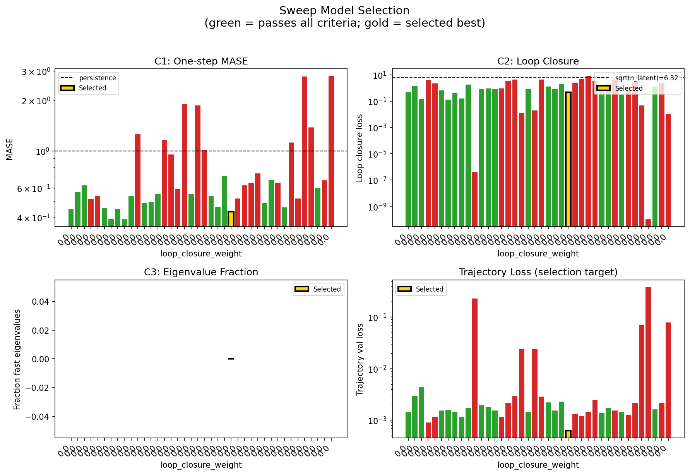
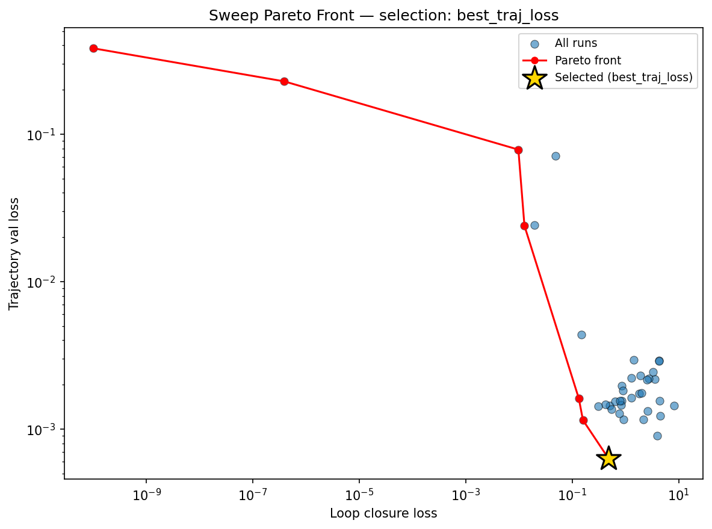
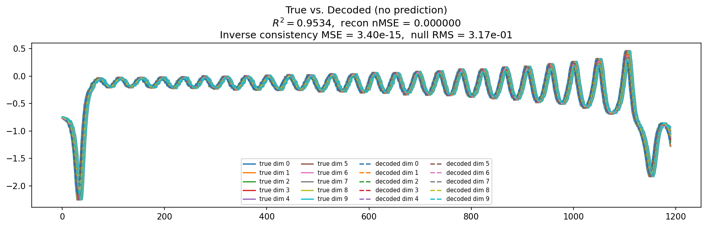
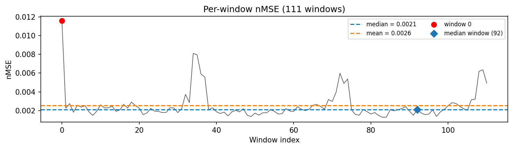
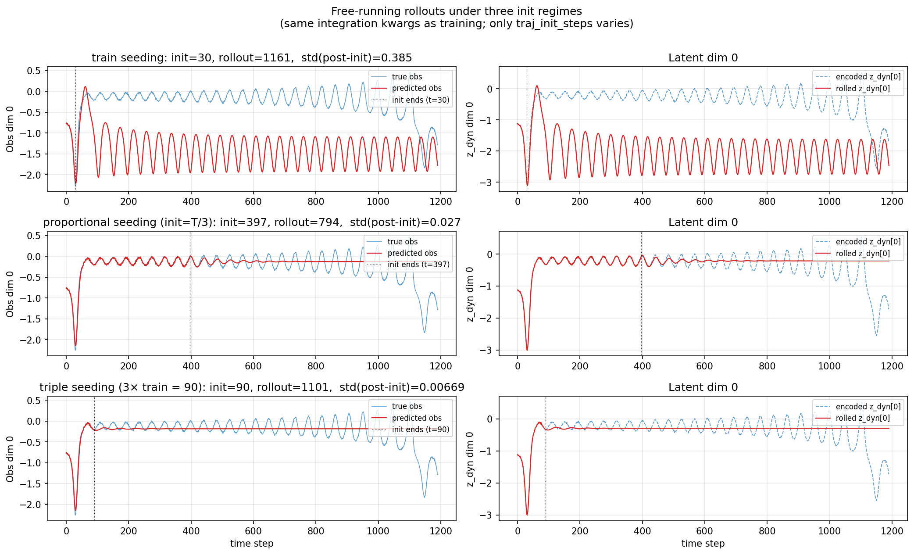
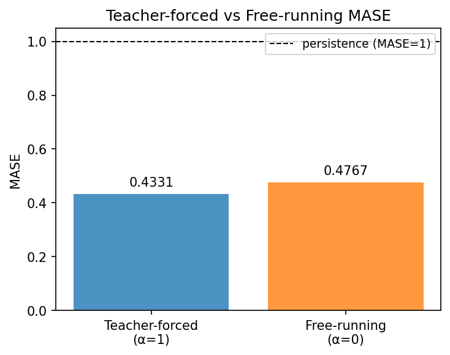
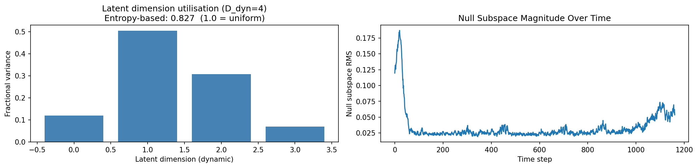
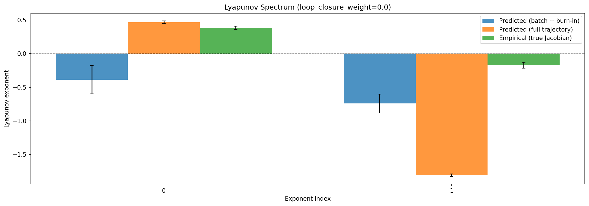
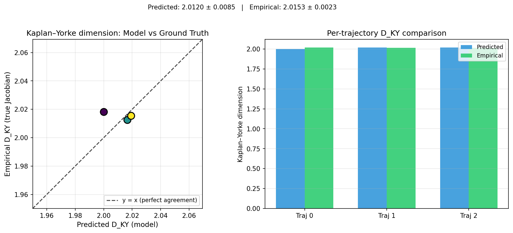
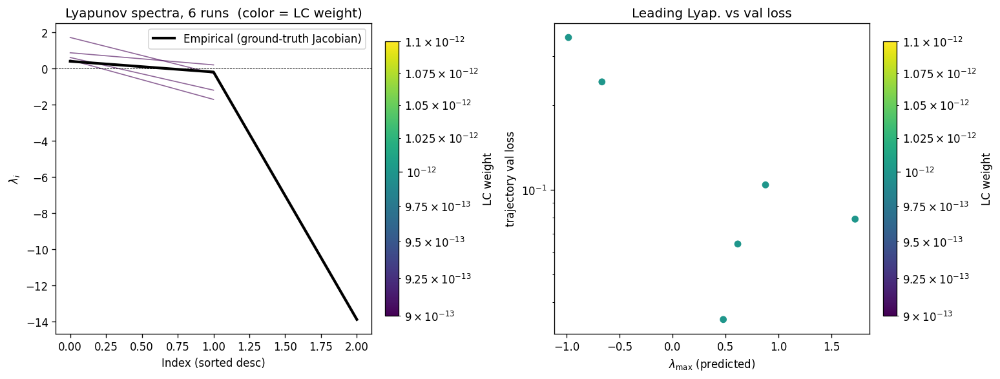
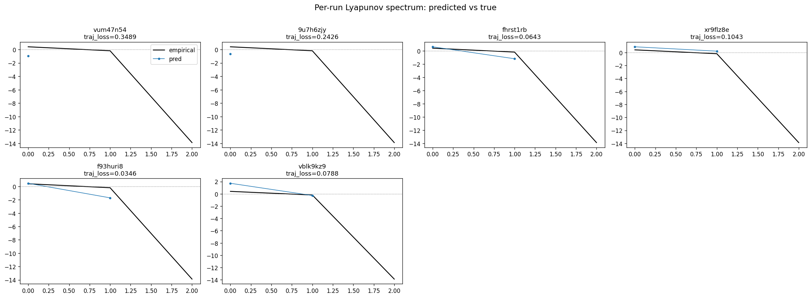
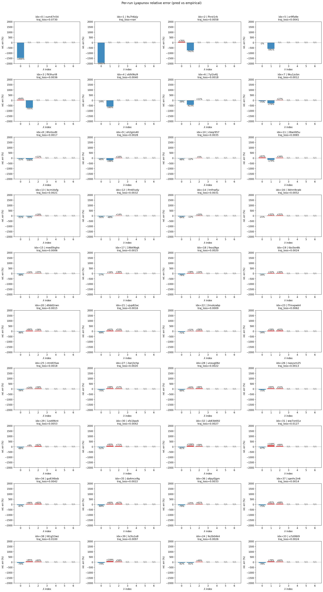
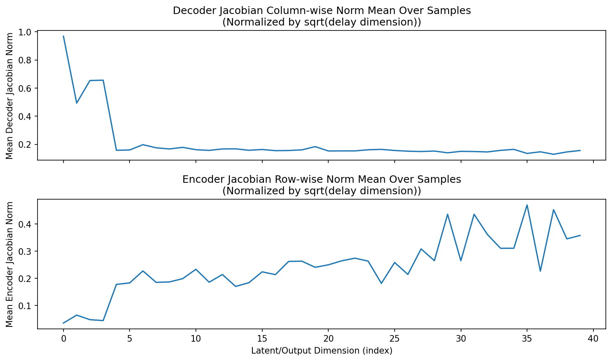
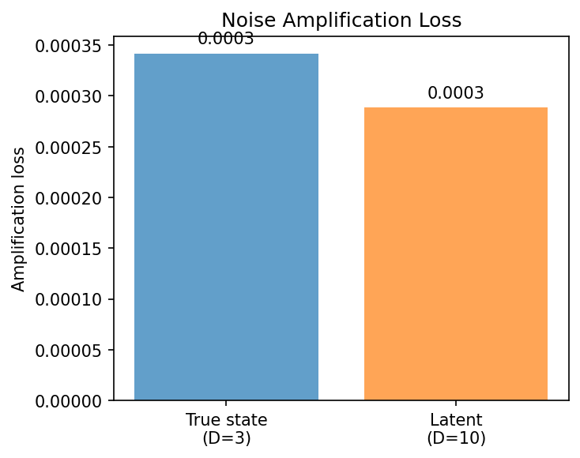
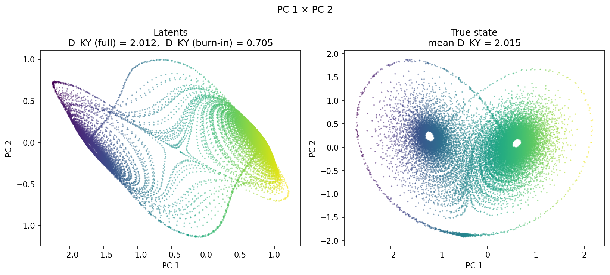
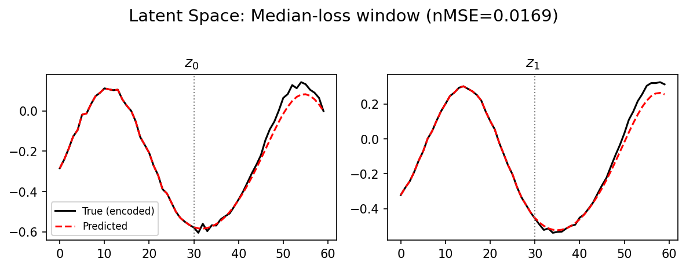
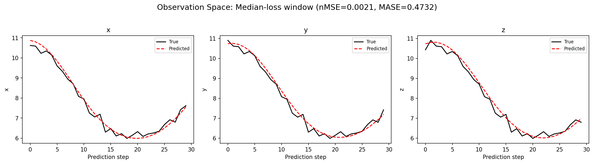
(to be written)
run_analytics stdoutrun_analyticsNo run_id provided — selecting best run from group 'lorenz_partial_additive_mse_uniform_p30_obsnoise001__ndelays_initsteps_autodim' ...
Found 42 total runs in JacobianODE/Lorenz_INDpartial_NDInitSweep_autodim_D1_NormTrue__JacobianODE (group=lorenz_partial_additive_mse_uniform_p30_obsnoise001__ndelays_initsteps_autodim)
All runs (state, loop_closure_weight, tangent_entropy_weight, kl_dyn_weight):
vum47n54: state=finished, lc=0.0, te=0.0, kl_dyn=0.0
9u7h6zjy: state=finished, lc=0.0, te=0.0, kl_dyn=0.0
fhrst1rb: state=finished, lc=0.0, te=0.0, kl_dyn=0.0
xr9flz8e: state=finished, lc=0.0, te=0.0, kl_dyn=0.0
f93huri8: state=finished, lc=0.0, te=0.0, kl_dyn=0.0
vblk9kz9: state=finished, lc=0.0, te=0.0, kl_dyn=0.0
7yi2s4lj: state=finished, lc=0.0, te=0.0, kl_dyn=0.0
9ku1zcbn: state=finished, lc=0.0, te=0.0, kl_dyn=0.0
8hntsv8t: state=finished, lc=0.0, te=0.0, kl_dyn=0.0
uh2gim40: state=finished, lc=0.0, te=0.0, kl_dyn=0.0
cteqr957: state=finished, lc=0.0, te=0.0, kl_dyn=0.0
28anfd5u: state=finished, lc=0.0, te=0.0, kl_dyn=0.0
bcmi4sfg: state=finished, lc=0.0, te=0.0, kl_dyn=0.0
ifm65vdy: state=finished, lc=0.0, te=0.0, kl_dyn=0.0
lmfnwfju: state=finished, lc=0.0, te=0.0, kl_dyn=0.0
3bhm9cwb: state=finished, lc=0.0, te=0.0, kl_dyn=0.0
mwd5kgho: state=finished, lc=0.0, te=0.0, kl_dyn=0.0
19bk9bgk: state=finished, lc=0.0, te=0.0, kl_dyn=0.0
fesvj9gx: state=finished, lc=0.0, te=0.0, kl_dyn=0.0
tbc0sn6k: state=finished, lc=0.0, te=0.0, kl_dyn=0.0
d0dd2rwn: state=finished, lc=0.0, te=0.0, kl_dyn=0.0
ujup82ac: state=finished, lc=0.0, te=0.0, kl_dyn=0.0
2mukzabp: state=finished, lc=0.0, te=0.0, kl_dyn=0.0
db2jesdp: state=finished, lc=0.0, te=0.0, kl_dyn=0.0
f7mxpwk4: state=finished, lc=0.0, te=0.0, kl_dyn=0.0
ctm835as: state=finished, lc=0.0, te=0.0, kl_dyn=0.0
2wrj3chp: state=finished, lc=0.0, te=0.0, kl_dyn=0.0
unoug06z: state=finished, lc=0.0, te=0.0, kl_dyn=0.0
naxyvm25: state=finished, lc=0.0, te=0.0, kl_dyn=0.0
1zx69knt: state=finished, lc=0.0, te=0.0, kl_dyn=0.0
xfx1bpzk: state=finished, lc=0.0, te=0.0, kl_dyn=0.0
ub83b692: state=finished, lc=0.0, te=0.0, kl_dyn=0.0
ww7xn01z: state=finished, lc=0.0, te=0.0, kl_dyn=0.0
1kcizs0m: state=finished, lc=0.0, te=0.0, kl_dyn=0.0
gu634bsb: state=finished, lc=0.0, te=0.0, kl_dyn=0.0
da4mcx9g: state=finished, lc=0.0, te=0.0, kl_dyn=0.0
s6py0jgm: state=finished, lc=0.0, te=0.0, kl_dyn=0.0
qanhc2n6: state=finished, lc=0.0, te=0.0, kl_dyn=0.0
t61g53wz: state=finished, lc=0.0, te=0.0, kl_dyn=0.0
ls3lu1o8: state=finished, lc=0.0, te=0.0, kl_dyn=0.0
9s2b04k4: state=finished, lc=0.0, te=0.0, kl_dyn=0.0
u7z0l6t9: state=finished, lc=0.0, te=0.0, kl_dyn=0.0
slurm_timeout_min not found in any run config — falling back to 180 min
Including vum47n54 (lc=0.0): use_all_runs=True (state=finished)
Including 9u7h6zjy (lc=0.0): use_all_runs=True (state=finished)
Including fhrst1rb (lc=0.0): use_all_runs=True (state=finished)
Including xr9flz8e (lc=0.0): use_all_runs=True (state=finished)
Including f93huri8 (lc=0.0): use_all_runs=True (state=finished)
Including vblk9kz9 (lc=0.0): use_all_runs=True (state=finished)
Including 7yi2s4lj (lc=0.0): use_all_runs=True (state=finished)
Including 9ku1zcbn (lc=0.0): use_all_runs=True (state=finished)
Including 8hntsv8t (lc=0.0): use_all_runs=True (state=finished)
Including uh2gim40 (lc=0.0): use_all_runs=True (state=finished)
Including cteqr957 (lc=0.0): use_all_runs=True (state=finished)
Including 28anfd5u (lc=0.0): use_all_runs=True (state=finished)
Including bcmi4sfg (lc=0.0): use_all_runs=True (state=finished)
Including ifm65vdy (lc=0.0): use_all_runs=True (state=finished)
Including lmfnwfju (lc=0.0): use_all_runs=True (state=finished)
Including 3bhm9cwb (lc=0.0): use_all_runs=True (state=finished)
Including mwd5kgho (lc=0.0): use_all_runs=True (state=finished)
Including 19bk9bgk (lc=0.0): use_all_runs=True (state=finished)
Including fesvj9gx (lc=0.0): use_all_runs=True (state=finished)
Including tbc0sn6k (lc=0.0): use_all_runs=True (state=finished)
Including d0dd2rwn (lc=0.0): use_all_runs=True (state=finished)
Including ujup82ac (lc=0.0): use_all_runs=True (state=finished)
Including 2mukzabp (lc=0.0): use_all_runs=True (state=finished)
Including db2jesdp (lc=0.0): use_all_runs=True (state=finished)
Including f7mxpwk4 (lc=0.0): use_all_runs=True (state=finished)
Including ctm835as (lc=0.0): use_all_runs=True (state=finished)
Including 2wrj3chp (lc=0.0): use_all_runs=True (state=finished)
Including unoug06z (lc=0.0): use_all_runs=True (state=finished)
Including naxyvm25 (lc=0.0): use_all_runs=True (state=finished)
Including 1zx69knt (lc=0.0): use_all_runs=True (state=finished)
Including xfx1bpzk (lc=0.0): use_all_runs=True (state=finished)
Including ub83b692 (lc=0.0): use_all_runs=True (state=finished)
Including ww7xn01z (lc=0.0): use_all_runs=True (state=finished)
Including 1kcizs0m (lc=0.0): use_all_runs=True (state=finished)
Including gu634bsb (lc=0.0): use_all_runs=True (state=finished)
Including da4mcx9g (lc=0.0): use_all_runs=True (state=finished)
Including s6py0jgm (lc=0.0): use_all_runs=True (state=finished)
Including qanhc2n6 (lc=0.0): use_all_runs=True (state=finished)
Including t61g53wz (lc=0.0): use_all_runs=True (state=finished)
Including ls3lu1o8 (lc=0.0): use_all_runs=True (state=finished)
Including 9s2b04k4 (lc=0.0): use_all_runs=True (state=finished)
Including u7z0l6t9 (lc=0.0): use_all_runs=True (state=finished)
Found 42 effectively-done sweep runs:
loop_closure_weight=0.0, tangent_entropy_weight=0.0, kl_dyn_weight=0.0 -> run_id=19bk9bgk
loop_closure_weight=0.0, tangent_entropy_weight=0.0, kl_dyn_weight=0.0 -> run_id=1kcizs0m
loop_closure_weight=0.0, tangent_entropy_weight=0.0, kl_dyn_weight=0.0 -> run_id=1zx69knt
loop_closure_weight=0.0, tangent_entropy_weight=0.0, kl_dyn_weight=0.0 -> run_id=28anfd5u
loop_closure_weight=0.0, tangent_entropy_weight=0.0, kl_dyn_weight=0.0 -> run_id=2mukzabp
loop_closure_weight=0.0, tangent_entropy_weight=0.0, kl_dyn_weight=0.0 -> run_id=2wrj3chp
loop_closure_weight=0.0, tangent_entropy_weight=0.0, kl_dyn_weight=0.0 -> run_id=3bhm9cwb
loop_closure_weight=0.0, tangent_entropy_weight=0.0, kl_dyn_weight=0.0 -> run_id=7yi2s4lj
loop_closure_weight=0.0, tangent_entropy_weight=0.0, kl_dyn_weight=0.0 -> run_id=8hntsv8t
loop_closure_weight=0.0, tangent_entropy_weight=0.0, kl_dyn_weight=0.0 -> run_id=9ku1zcbn
loop_closure_weight=0.0, tangent_entropy_weight=0.0, kl_dyn_weight=0.0 -> run_id=9s2b04k4
loop_closure_weight=0.0, tangent_entropy_weight=0.0, kl_dyn_weight=0.0 -> run_id=9u7h6zjy
loop_closure_weight=0.0, tangent_entropy_weight=0.0, kl_dyn_weight=0.0 -> run_id=bcmi4sfg
loop_closure_weight=0.0, tangent_entropy_weight=0.0, kl_dyn_weight=0.0 -> run_id=cteqr957
loop_closure_weight=0.0, tangent_entropy_weight=0.0, kl_dyn_weight=0.0 -> run_id=ctm835as
loop_closure_weight=0.0, tangent_entropy_weight=0.0, kl_dyn_weight=0.0 -> run_id=d0dd2rwn
loop_closure_weight=0.0, tangent_entropy_weight=0.0, kl_dyn_weight=0.0 -> run_id=da4mcx9g
loop_closure_weight=0.0, tangent_entropy_weight=0.0, kl_dyn_weight=0.0 -> run_id=db2jesdp
loop_closure_weight=0.0, tangent_entropy_weight=0.0, kl_dyn_weight=0.0 -> run_id=f7mxpwk4
loop_closure_weight=0.0, tangent_entropy_weight=0.0, kl_dyn_weight=0.0 -> run_id=f93huri8
loop_closure_weight=0.0, tangent_entropy_weight=0.0, kl_dyn_weight=0.0 -> run_id=fesvj9gx
loop_closure_weight=0.0, tangent_entropy_weight=0.0, kl_dyn_weight=0.0 -> run_id=fhrst1rb
loop_closure_weight=0.0, tangent_entropy_weight=0.0, kl_dyn_weight=0.0 -> run_id=gu634bsb
loop_closure_weight=0.0, tangent_entropy_weight=0.0, kl_dyn_weight=0.0 -> run_id=ifm65vdy
loop_closure_weight=0.0, tangent_entropy_weight=0.0, kl_dyn_weight=0.0 -> run_id=lmfnwfju
loop_closure_weight=0.0, tangent_entropy_weight=0.0, kl_dyn_weight=0.0 -> run_id=ls3lu1o8
loop_closure_weight=0.0, tangent_entropy_weight=0.0, kl_dyn_weight=0.0 -> run_id=mwd5kgho
loop_closure_weight=0.0, tangent_entropy_weight=0.0, kl_dyn_weight=0.0 -> run_id=naxyvm25
loop_closure_weight=0.0, tangent_entropy_weight=0.0, kl_dyn_weight=0.0 -> run_id=qanhc2n6
loop_closure_weight=0.0, tangent_entropy_weight=0.0, kl_dyn_weight=0.0 -> run_id=s6py0jgm
loop_closure_weight=0.0, tangent_entropy_weight=0.0, kl_dyn_weight=0.0 -> run_id=t61g53wz
loop_closure_weight=0.0, tangent_entropy_weight=0.0, kl_dyn_weight=0.0 -> run_id=tbc0sn6k
loop_closure_weight=0.0, tangent_entropy_weight=0.0, kl_dyn_weight=0.0 -> run_id=u7z0l6t9
loop_closure_weight=0.0, tangent_entropy_weight=0.0, kl_dyn_weight=0.0 -> run_id=ub83b692
loop_closure_weight=0.0, tangent_entropy_weight=0.0, kl_dyn_weight=0.0 -> run_id=uh2gim40
loop_closure_weight=0.0, tangent_entropy_weight=0.0, kl_dyn_weight=0.0 -> run_id=ujup82ac
loop_closure_weight=0.0, tangent_entropy_weight=0.0, kl_dyn_weight=0.0 -> run_id=unoug06z
loop_closure_weight=0.0, tangent_entropy_weight=0.0, kl_dyn_weight=0.0 -> run_id=vblk9kz9
loop_closure_weight=0.0, tangent_entropy_weight=0.0, kl_dyn_weight=0.0 -> run_id=vum47n54
loop_closure_weight=0.0, tangent_entropy_weight=0.0, kl_dyn_weight=0.0 -> run_id=ww7xn01z
loop_closure_weight=0.0, tangent_entropy_weight=0.0, kl_dyn_weight=0.0 -> run_id=xfx1bpzk
loop_closure_weight=0.0, tangent_entropy_weight=0.0, kl_dyn_weight=0.0 -> run_id=xr9flz8e
Dropping 2 run(s) with no checkpoint dir: ['1kcizs0m', 'db2jesdp']
n_dims=45, n_latent=45, n_dyn=4, dt=0.0150
run=19bk9bgk: DiagnosticMetrics(one_step_mase=0.45049813389778137, loop_closure_loss=0.500860333442688, fast_eigenvalue_fraction=0.0, trajectory_val_loss=0.001443450921215117) (from cache, n_batches=100)
run=1zx69knt: DiagnosticMetrics(one_step_mase=0.5688852667808533, loop_closure_loss=1.428652048110962, fast_eigenvalue_fraction=0.0, trajectory_val_loss=0.0029551475308835506) (from cache, n_batches=100)
run=28anfd5u: DiagnosticMetrics(one_step_mase=0.6225888133049011, loop_closure_loss=0.1501152366399765, fast_eigenvalue_fraction=0.0, trajectory_val_loss=0.004348913673311472) (from cache, n_batches=100)
run=2mukzabp: DiagnosticMetrics(one_step_mase=0.5155223608016968, loop_closure_loss=3.9342236518859863, fast_eigenvalue_fraction=0.0, trajectory_val_loss=0.0008993926458060741) (from cache, n_batches=100)
run=2wrj3chp: DiagnosticMetrics(one_step_mase=0.5398163795471191, loop_closure_loss=2.158484697341919, fast_eigenvalue_fraction=0.0, trajectory_val_loss=0.0011577341938391328) (from cache, n_batches=100)
run=3bhm9cwb: DiagnosticMetrics(one_step_mase=0.4573795795440674, loop_closure_loss=0.6444074511528015, fast_eigenvalue_fraction=0.0, trajectory_val_loss=0.0015387774910777807) (from cache, n_batches=100)
run=7yi2s4lj: DiagnosticMetrics(one_step_mase=0.39183130860328674, loop_closure_loss=0.13248783349990845, fast_eigenvalue_fraction=0.0, trajectory_val_loss=0.001612941618077457) (from cache, n_batches=100)
run=8hntsv8t: DiagnosticMetrics(one_step_mase=0.44732266664505005, loop_closure_loss=0.4154837131500244, fast_eigenvalue_fraction=0.0, trajectory_val_loss=0.0014671949902549386) (from cache, n_batches=100)
run=9ku1zcbn: DiagnosticMetrics(one_step_mase=0.38968488574028015, loop_closure_loss=0.15855036675930023, fast_eigenvalue_fraction=0.0, trajectory_val_loss=0.001148528652265668) (from cache, n_batches=100)
run=9s2b04k4: DiagnosticMetrics(one_step_mase=0.5400614738464355, loop_closure_loss=1.8215380907058716, fast_eigenvalue_fraction=0.0, trajectory_val_loss=0.0017378047341480851) (from cache, n_batches=100)
run=9u7h6zjy: DiagnosticMetrics(one_step_mase=1.2581123113632202, loop_closure_loss=3.9132567053457024e-07, fast_eigenvalue_fraction=0.0, trajectory_val_loss=0.22783158719539642) (from cache, n_batches=100)
run=bcmi4sfg: DiagnosticMetrics(one_step_mase=0.48876404762268066, loop_closure_loss=0.8471764326095581, fast_eigenvalue_fraction=0.0, trajectory_val_loss=0.001959516666829586) (from cache, n_batches=100)
run=cteqr957: DiagnosticMetrics(one_step_mase=0.4954272508621216, loop_closure_loss=0.9030600786209106, fast_eigenvalue_fraction=0.0, trajectory_val_loss=0.001819030032493174) (from cache, n_batches=100)
run=ctm835as: DiagnosticMetrics(one_step_mase=0.5541290044784546, loop_closure_loss=0.8512558937072754, fast_eigenvalue_fraction=0.0, trajectory_val_loss=0.0015556997386738658) (from cache, n_batches=100)
run=d0dd2rwn: DiagnosticMetrics(one_step_mase=1.157900333404541, loop_closure_loss=0.9055870175361633, fast_eigenvalue_fraction=0.0, trajectory_val_loss=0.001165163703262806) (from cache, n_batches=100)
run=da4mcx9g: DiagnosticMetrics(one_step_mase=0.9530088305473328, loop_closure_loss=3.584273099899292, fast_eigenvalue_fraction=0.0, trajectory_val_loss=0.0021893219090998173) (from cache, n_batches=100)
run=f7mxpwk4: DiagnosticMetrics(one_step_mase=0.5914601683616638, loop_closure_loss=4.230276584625244, fast_eigenvalue_fraction=0.0, trajectory_val_loss=0.002912758616730571) (from cache, n_batches=100)
run=f93huri8: DiagnosticMetrics(one_step_mase=1.9041943550109863, loop_closure_loss=0.012637934647500515, fast_eigenvalue_fraction=0.0, trajectory_val_loss=0.02388305589556694) (from cache, n_batches=100)
run=fesvj9gx: DiagnosticMetrics(one_step_mase=0.5516402125358582, loop_closure_loss=0.8331121206283569, fast_eigenvalue_fraction=0.0, trajectory_val_loss=0.0014535405207425356) (from cache, n_batches=100)
run=fhrst1rb: DiagnosticMetrics(one_step_mase=1.8668575286865234, loop_closure_loss=0.019352059811353683, fast_eigenvalue_fraction=0.0, trajectory_val_loss=0.024262426421046257) (from cache, n_batches=100)
run=gu634bsb: DiagnosticMetrics(one_step_mase=1.016064167022705, loop_closure_loss=4.210305690765381, fast_eigenvalue_fraction=0.0, trajectory_val_loss=0.0028843434993177652) (from cache, n_batches=100)
run=ifm65vdy: DiagnosticMetrics(one_step_mase=0.5349423885345459, loop_closure_loss=1.2933228015899658, fast_eigenvalue_fraction=0.0, trajectory_val_loss=0.0022114207968115807) (from cache, n_batches=100)
run=lmfnwfju: DiagnosticMetrics(one_step_mase=0.46289074420928955, loop_closure_loss=0.7771902680397034, fast_eigenvalue_fraction=0.0, trajectory_val_loss=0.001549824490211904) (from cache, n_batches=100)
run=ls3lu1o8: DiagnosticMetrics(one_step_mase=0.7110051512718201, loop_closure_loss=1.9073632955551147, fast_eigenvalue_fraction=0.0, trajectory_val_loss=0.002314868615940213) (from cache, n_batches=100)
run=mwd5kgho: DiagnosticMetrics(one_step_mase=0.43435487151145935, loop_closure_loss=0.47887882590293884, fast_eigenvalue_fraction=0.0, trajectory_val_loss=0.0006314231432043016) (from cache, n_batches=100)
run=naxyvm25: DiagnosticMetrics(one_step_mase=0.5187263488769531, loop_closure_loss=2.6093761920928955, fast_eigenvalue_fraction=0.0, trajectory_val_loss=0.0013251893687993288) (from cache, n_batches=100)
run=qanhc2n6: DiagnosticMetrics(one_step_mase=0.6229138970375061, loop_closure_loss=4.508563041687012, fast_eigenvalue_fraction=0.0, trajectory_val_loss=0.0012236930197104812) (from cache, n_batches=100)
run=s6py0jgm: DiagnosticMetrics(one_step_mase=0.64365553855896, loop_closure_loss=8.123761177062988, fast_eigenvalue_fraction=0.0, trajectory_val_loss=0.0014419842045754194) (from cache, n_batches=100)
run=t61g53wz: DiagnosticMetrics(one_step_mase=0.7339745759963989, loop_closure_loss=3.259683847427368, fast_eigenvalue_fraction=0.0, trajectory_val_loss=0.002445017220452428) (from cache, n_batches=100)
run=tbc0sn6k: DiagnosticMetrics(one_step_mase=0.4870520830154419, loop_closure_loss=0.5453914403915405, fast_eigenvalue_fraction=0.0, trajectory_val_loss=0.001365299103781581) (from cache, n_batches=100)
run=u7z0l6t9: DiagnosticMetrics(one_step_mase=0.6686484813690186, loop_closure_loss=1.9942762851715088, fast_eigenvalue_fraction=0.0, trajectory_val_loss=0.0017507827142253518) (from cache, n_batches=100)
run=ub83b692: DiagnosticMetrics(one_step_mase=0.6460710763931274, loop_closure_loss=4.313647270202637, fast_eigenvalue_fraction=0.0, trajectory_val_loss=0.0015551038086414337) (from cache, n_batches=100)
run=uh2gim40: DiagnosticMetrics(one_step_mase=0.46096792817115784, loop_closure_loss=0.30656537413597107, fast_eigenvalue_fraction=0.0, trajectory_val_loss=0.0014330625999718904) (from cache, n_batches=100)
run=ujup82ac: DiagnosticMetrics(one_step_mase=1.1193588972091675, loop_closure_loss=0.7681381702423096, fast_eigenvalue_fraction=0.0, trajectory_val_loss=0.001275933813303709) (from cache, n_batches=100)
run=unoug06z: DiagnosticMetrics(one_step_mase=0.5201263427734375, loop_closure_loss=2.7462873458862305, fast_eigenvalue_fraction=0.0, trajectory_val_loss=0.0021947945933789015) (from cache, n_batches=100)
run=vblk9kz9: DiagnosticMetrics(one_step_mase=2.775660514831543, loop_closure_loss=0.047992728650569916, fast_eigenvalue_fraction=0.0, trajectory_val_loss=0.07126376032829285) (from cache, n_batches=100)
run=vum47n54: DiagnosticMetrics(one_step_mase=1.3777366876602173, loop_closure_loss=1.0135444566961027e-10, fast_eigenvalue_fraction=0.0, trajectory_val_loss=0.38192814588546753) (from cache, n_batches=100)
run=ww7xn01z: DiagnosticMetrics(one_step_mase=0.5987681150436401, loop_closure_loss=1.2793498039245605, fast_eigenvalue_fraction=0.0, trajectory_val_loss=0.0016272536013275385) (from cache, n_batches=100)
run=xfx1bpzk: DiagnosticMetrics(one_step_mase=0.6671359539031982, loop_closure_loss=2.5201685428619385, fast_eigenvalue_fraction=0.0, trajectory_val_loss=0.0021609135437756777) (from cache, n_batches=100)
run=xr9flz8e: DiagnosticMetrics(one_step_mase=2.7965402603149414, loop_closure_loss=0.009711168706417084, fast_eigenvalue_fraction=0.0, trajectory_val_loss=0.07851911336183548) (from cache, n_batches=100)
Ranking method: best_traj_loss
Best run ID: mwd5kgho
Best loop_closure_weight: 0.0
Best tangent_entropy_weight: 0.0
Best kl_dyn_weight: 0.0
Best traj loss: 0.000631
Criteria applied: ['C1', 'C2', 'C3']
Surviving: 20 / 40
Auto-selected run_id: mwd5kgho
======================================================================
PARETO FRONTIER RUNS (7 runs)
======================================================================
Run ID LC Loss Traj Val Loss
------------ -------------- --------------
vum47n54 0.000000 0.381928
9u7h6zjy 0.000000 0.227832
xr9flz8e 0.009711 0.078519
f93huri8 0.012638 0.023883
7yi2s4lj 0.132488 0.001613
9ku1zcbn 0.158550 0.001149
mwd5kgho 0.478879 0.000631 <-- selected
======================================================================
RANKING METHOD COMPARISON (over 20 survivors)
======================================================================
Method Run ID LC Loss Traj Val Loss
---------------------- ------------ -------------- --------------
best_traj_loss mwd5kgho 0.478879 0.000631 <-- active
pareto_knee 9ku1zcbn 0.158550 0.001149
geo_rank 9ku1zcbn 0.158550 0.001149
minimax_rank 9ku1zcbn 0.158550 0.001149
geo_log_score 7yi2s4lj 0.132488 0.001613
minimax_log_score 9ku1zcbn 0.158550 0.001149
======================================================================
Loading run mwd5kgho from JacobianODE/Lorenz_INDpartial_NDInitSweep_autodim_D1_NormTrue__JacobianODE ...
Train dataset shape: torch.Size([24222, 60, 40])
Validation dataset shape: torch.Size([7707, 60, 40])
Test dataset shape: torch.Size([3303, 60, 40])
Train trajectories dataset shape: torch.Size([22, 1161, 40])
Validation trajectories dataset shape: torch.Size([7, 1161, 40])
Test trajectories dataset shape: torch.Size([3, 1161, 40])
Loading checkpoint epoch=165-step=33200.ckpt...
Computing reconstruction ...
Computing MASE ...
Teacher-forced MASE: 0.4331
Free-running MASE: 0.4767
Computing latent utilization ...
Entropy-based utilization: 0.827
Null subspace mean RMS: 4.127183e-02
Computing Lyapunov exponents ...
Computing full-trajectory Lyapunov (3 test trajs, T=1161) ...
Predicted Lyapunov exponents (batch+burn-in, 128 windowed trajs):
λ_1 = +0.0973 ± 0.3705
λ_2 = -0.4449 ± 0.3380
λ_3 = -10.1039 ± 1.4395
λ_4 = -10.7352 ± 1.3873
Predicted Lyapunov exponents (full-length, 3 test trajs):
λ_1 = +0.2100 ± 0.0806
λ_2 = -0.0800 ± 0.0319
λ_3 = -10.7356 ± 0.1418
λ_4 = -11.4897 ± 0.0324
Empirical Lyapunov exponents (mean ± std):
λ_1 = +0.3846 ± 0.0251
λ_2 = -0.1716 ± 0.0444
λ_3 = -13.8799 ± 0.0398
Mean KY dim (predicted): 2.012 ± 0.008
Mean KY dim (empirical): 2.015 ± 0.002
Mean KY dim (burn-in): 0.705 ± 0.782
Computing prediction windows ...
Windows: 111 — nMSE min=0.0013, median=0.0021, mean=0.0026, max=0.0116
Computing long-trajectory free-running rollouts ...
Computing encoder/decoder Jacobians ...
encoder_jacobian: (128, 40, 40)
decoder_jacobian: (128, 40, 40)
Computing amplification loss ...
Amplification loss — True state: 0.000213
Amplification loss — Latent: 0.000857